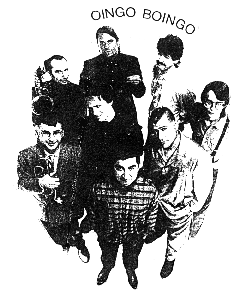

Pop Music in Movies: An Insider's View
By Tom Popson
Chicago Tribune, 1987

Open a newspaper to the movie listings these days, and you're sure to find at least one film--more likely a nomber of films--with a soundtrack consisting of songs by pop performers. pop tunes have so infiltrated the movies that it takes only a slight streach of the imagination to think that if Gone With the Wind were being released today, it would include catchy little ditties like "Sweet Home Tara" by Phil Collins and "Rappin' Scarlett" by the Beastie Boys.
Nothing lasts forever, though: The current love affair between movies and pop music is bound to cool off eventually, and that raises a question: How will the current crop of pop-studded films look to us 20 years from now?
There's a chance, perhaps, that these movies will have a nostalgic glow to them about two decades hense. But there's also a chance that many of them will seem dated, the use of pop songs sounding a bit incongruous to future sensibilities. The latter view gets the endorsement of Danny Elfman, lead singer for the Los Angeles band Oingo Boingo and a songwriter-composer who himself has contributed pop songs to films and written scores for movies.
Elfman's band has contributed songs to a number of films, including the title tune to director Johnm Hughes' movie Weird Science. "Gratitude", a number from an Elfman solo album, was part of the Beverly Hills Cop soundtrack. Elfman has written scores for a few films, including Pee-wee's Big Adventure and Back to School, with fellow Oingo Boingo musician Steve Bartek handling orchestration, and Elfman and Bartek have done the music for episodes of the TV series 'Amazing Stories' and 'Alfred Hitchcock Presents'.
Elfman is, as he himself notes, "on both sides of the fence," contributing songs to films yet looking somewhat askance at the current crop of movies employing pop tunes.
"I can look at Beverly Hills Cop now," says Elfman,"and it already feels like an out-of-date film just because of the songs. And that was what, only three years ago?
"Yes, Oingo Boingo does songs for film, and I write songs for film. but when I do a song for a film, I like it to be a film that should have a song. If I look at a film and don't get that feeling right away, I usually don't get involved with it.
"Here's my theory about all this: Most films use pop songs in a completely incongruous way. The filmmaker' only desire in putting the pop songs in the movie is to have hit records to promote the film. It's not because the film needs them.
"On the other hand, you have a John Hughes film. In that kind of movie, the film is about pop culture, and the songs become the score. The songs have as much or more of a place than a score. They are creating a contemporary feel. The kids are contemporary kids. And songs can convey that as well or better than a piece of score sometimes. As opposed to action-adventure films, romance films, serious films that use pop songs in a way that has nothing to do with the feel or mood of the movie. "To me, the only movies in which pop songs work, the only movies they should be in, are either movies that are purposely camp and funny or movies that are very much youth movies, pop-culture movies." Besides contributing individual songs to movies, Elfman has been scoring entire films for two years now (he has a deal with Oingo Boingo that allows him two months away from the band every year to work on movie projects). His first film score--if you don't count the work he did for his brother's underground film Forbidden Zone--was Pee-wee's Big Adventure. It wasn't a pop-music score, but a dramatic, 1930's style piece.
"No matter what the offer had been," says Elfman, "I would not have done a score that was pop- or rock-oriented. I'm absolutely adamant about developing my film-scoring career totally apart from that. Also, i really dislike pop scores.
"Film composing was something that dropped into my lap from heaven, as they say. In fact, I went through a lot of guilt last year because all of a sudden I was a recognized Hollywood film composer who had paid no dues whatsoever in the field. I figured, though, a decade and a half of dues-paying on the rock 'n' roll circut maybe counterbalances the scale a bit.
"I'd always been interested in film composing, from 12 years old on, but never felt I'd have much of an opportunity to do it in my life. I have no training, noghing. I figured maybe later on when i got too cranky and stiff to hop around on a concert stage, I would try to break in. And if I was lucky, at some point in my life I'd get to be in front of am orchestra.
"Well, my first score, for Pee-wee's Big Adventure, was for a 58-piece orchestra."
Elfman had been invited to interview for the job by the film's producers and director, who knew of his work on Forbidden Zone and the music made by Oingo Boingo.
"They were looking for a nontraditional composer," recalls Elfman. "They sat in a room with Pee-wee and me--I was one of many interviews--and we started talking, and I guess I pushed a lot of the right buttons in terms of my influenes, film composers I admired.
"Still, I had nothing to show them that would say I could do this. it took a lot of guts on their part. Rock 'n' roll composers make notoriously awful film composers. The two exceptions to that rule I can think of would be Randy Newman and Mark Knopfler. But dozens of others have broken into film composing in one form or another and don't have film sensibilities. They write scores like they're writing rock 'n' roll tunes for an orchestra."
While Elfman had to learn quickly the technical aspects of writing music for scenes on a movie screen, he found that writing to someone else's visual and plot ideas was not as restrictive as he had imagined. "I had always thought that would be very restrictive," says Elfman. "But two weeks ito the score, it was a very weird thing: I felt like I'd been scoring for years. The technical part of it fell into place so quickly. I'd always been a hard-core movie buff, and I just said, 'How would [composer] Bernard Herrmann or Nino Rota deal with this scene?' It was fun and easy, not constrictive at all. I realized then and there I'd like to be doing film scoring for a long time to come." Once his first film score was finished, says Elfman, he began regularly receiving offers to work on other movies. Carl Reiner's film Summer School, due out this summer, will feature Elfman's score,and Elfman is looking for a project to do this fall following Oingo Boingo's current tour (which brings the band to the Riveria Theater Saturday). "All of a sudden, I was in there," says Elfman. "Unfortunately, I'm one of the anointed few in only one genre of film, comedy. Which is ironic because I grew up on horror and science fiction films, and that's always what I thought I'd be the best at scoring.
"Composing is just like acting. When you get typecast, you have to consiciously breakout of that, and it's hard. But twice a year I ask for a month off from the band. And if I'm lucky enough that an interesting film happens to be scoring right at that time, I'll do it. Obviously, it's difficult to have a career that way. I've passed up some excllent films, but I'm in no rush. Film composing isn't a short-term career. It's not like rock 'n' roll. It's not like you've got this limited life-span built into it. Once you're in, you're in, unless you start doing horrible work or get senile."